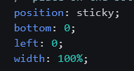
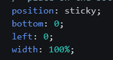

CSS Tricks
Here we intend to have have a list of of quick CSS Tricks. Eventually we will have a contents section (on this section) which will allow us to easily navigate to the section that we want.
This one is not numbered because we have just used it and it will eventually be placed on the html page.
When you want to format some HTML: Ctrl+Shift+I to format the entire file or Format Selection Ctrl+K Ctrl+F to just format the selected text.
1. Slideout Footer technique
This is called the Slideout Footer technique. This is crucial to having a footer
sit neatly at the bottom of the page, and to only appear when necessary. It was taken
from the following page: https://css-tricks.com/the-slideout-footer/.
What needs to happen is that must make sure that the footer section is below the main area
and the main page container has the following ingredients. Now keep in mind it may be
that one has as header of 10vh and therefore keeps the main page container to 90vh -- we
need to try this we haven't tried this yet. The second image
on the right is referring to the footer, one could also throw a top of 100%
on there for good measure. This is crucial for our front-end mentor
tasks so that people will know exactly how to contact us if necessary
-- anyway here's the code:
 

2. Dropdown navigation for navbar
Grid Key Notes
What we can clearly see is that the grid-template is what is being used to determine the design of the grid while the .two is determining the dimensions of the text in the article.
Fireship: Implicit Grid
Note that auto-fit takes up all of the available space in this example, auto-fill operates a bit differently and may only fill up as much space as the collective width of the box-fixed-widths allows.